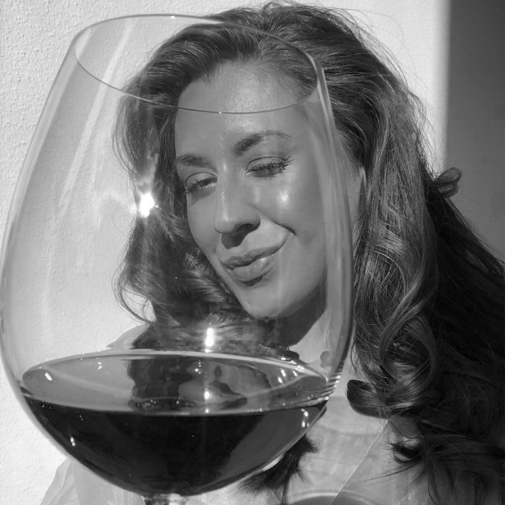
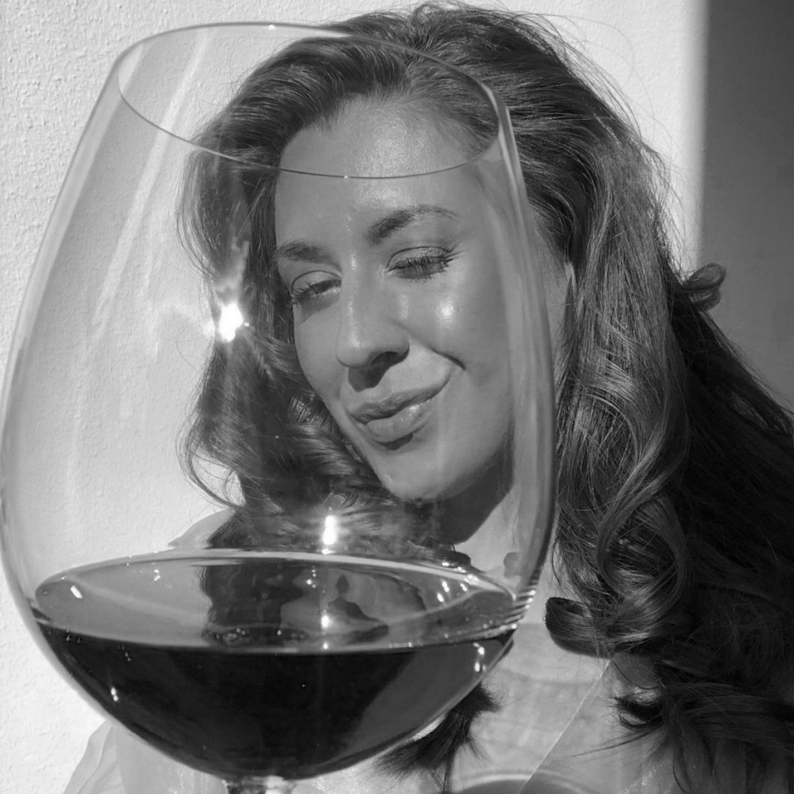
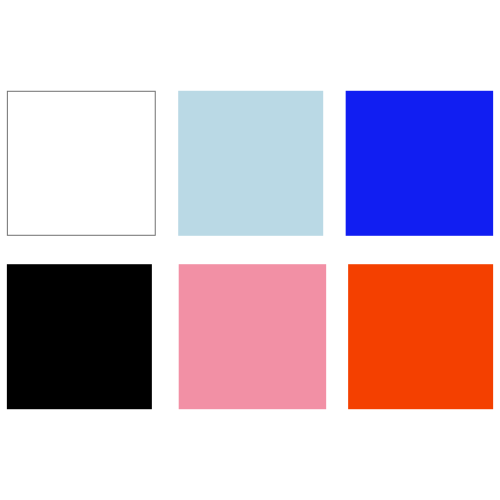
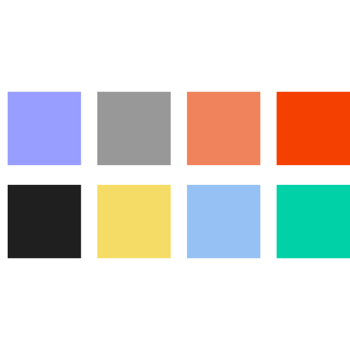

OM OS
Vi er fire piger fra Multimediedesigner på KEA, som elsker cocktails og
kunst. Læs mere om os og vores visuelle identitet nedenfor.
 Vores identitet er at skille og ud ved at alle vores signatur drinks er
digital kunst. Vi ønsker at blande cocktails med kunst, og gør det ved
at skabe et unikt univers, hvor kreativitet får lov til at blomstre.
“Vi laver alle vores illustrationer I Adobe Illustrator. Her er vi
inspireret af Digital kunst.”

Vores identitet er at skille og ud ved at alle vores signatur drinks er
digital kunst. Vi ønsker at blande cocktails med kunst, og gør det ved
at skabe et unikt univers, hvor kreativitet får lov til at blomstre.
“Vi laver alle vores illustrationer I Adobe Illustrator. Her er vi
inspireret af Digital kunst.”

Mød Emma
Emma er det man kalder en rigtig festabe, passionen for cocktails er
stor, og drak dem gerne hver dag. Favoritterne er primært pornstar
martini, mojito og bramble. Du finder altid Emma på dansegulvet eller
dansende på et bord efter 6 cocktails.
Mød Clara
Clara er en glædesspreder, det altid bidrager med et godt grin og et
stort smil til alle sammenkomster. Primært ser du hende med en Dark &
Stormy i hånden, du finder altid Clara i baren efter 6 cocktails i gang
med at fortælle en god gammel røver historie.
Mød Mathilde
Mathilde er normalt det mere stille person, hun holder mere af at lytte
end at bable løs. Efter 6 cocktails finder du Mathilde lettere på tå med
en iskold Bramble i hånden, i fuld gang med at mingle med nye mennesker,
i følge Mathildes selv, drikker hun ikke cocktails men "snakke vand".
Mød Malene
Malene er normalt en mere stille person, og hun holder sig gerne for sig
selv. Efter 6 mojitos finder du Malene i fuld gang med at vise hendes
skøre side frem, hvilket altid giver et godt grin rundt omkring hos
hendes medmennesker.

Logo
Logoet er inspireret af den minimalistiske stil. Logoet gør plads til
andre illustrationer. Logoet repræsenterer det "uperfekte" og det
"skæve" univers. Navnet understøtter også vores tanker og idéer, idet at
navnet "Slurp" svulper ud af glasset.

Typografi
Typografien "Bilo" er en kontrast til det farverige unicers. Fonten er
sans serif, og er en Adobe font ved navn Bilo Bold fra 2008. I og med,
at vores skrifttyper er den samme, bidrager det også til vores
minimalistiske stil, og med kontrast til farverne.

Farver
Vi har valgt en kombination af stærke farver og pasteller, da vi ønsker
et farvefyldt univers med kontraster. Vi benytter os desuden også af
meget white space, for at give farverne plads til at blomstre.

Illustrationer
Billedstil
Vores billedstil er illustrationer da vi ønskede et kunstnerisk univers
fyldt at kreativitet, leg og flotte farver præcis som vi ønsker, alt er
designet af os, og lavet i Adobe illustrator. Vores vision er at lave et
atypisk cocktail univers uden neon farver / neon skilte, på en skæv og
kunstnerisk måde. Alt billedmateriale på vores site er derfor
illustrationer.